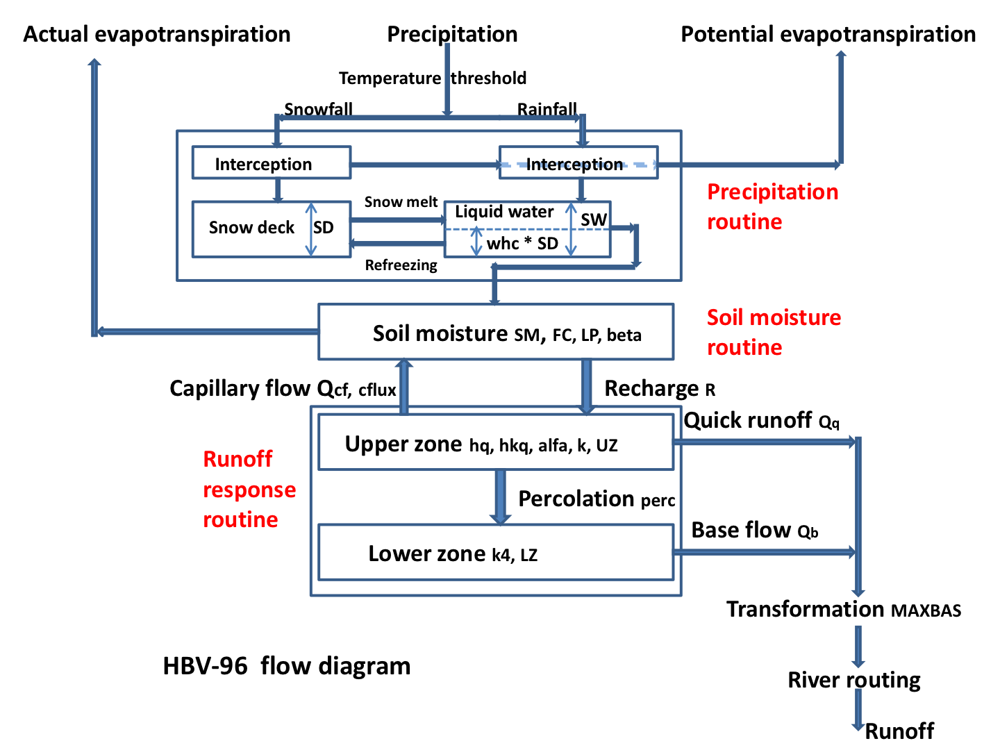

HBV model
The Hydrologiska Byrans Vattenbalansavdelning (HBV) model was introduced back in 1972 by the Swedisch Meteological and Hydrological Institute (SMHI). The HBV model is mainly used for runoff simulation and hydrological forecasting. The model is particularly useful for catchments where snow fall and snow melt are dominant factors, but application of the model is by no means restricted to these type of catchments.
The model is based on the HBV-96 model. However, the hydrological routing represent in HBV by a triangular function controlled by the MAXBAS parameter has been removed. Instead, the kinematic wave function is used to route the water downstream. All runoff that is generated in a cell in one of the HBV reservoirs is added to the kinematic wave reservoir at the end of a timestep. There is no connection between the different HBV cells within the model.
A catchment is divided into a number of grid cells. For each of the cells individually, daily runoff is computed through application of the HBV-96 of the HBV model. The use of the grid cells offers the possibility to turn the HBV modelling concept, which is originally lumped, into a distributed model.

The figure above shows a schematic view of hydrological response simulation with the HBV-modelling concept. The land-phase of the hydrological cycle is represented by three different components: a snow routine, a soil routine and a runoff response routine. Each component is discussed separately in more detail in HBV vertical concept.
The routing for river and overland flow is described in Kinematic wave.